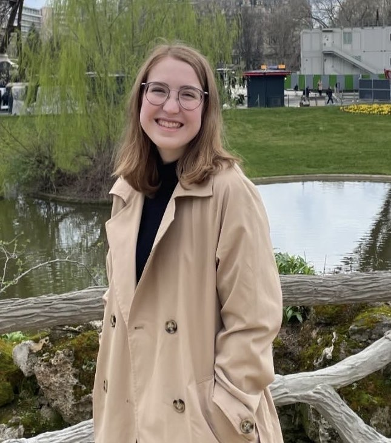

About Me
I am an NSF GRFP Fellow and a first year PhD student at the University of Miami Rosenstiel School of Marine, Atmospheric, and Earth Science, where I study under Dr. Brian Soden. My current research focuses on understanding how nonlinear forcing interactions affect radiative forcing from CO₂.
Before Miami, I completed my BS in Atmospheric Sciences (with a Minor in Computer Science) at the University of Illinois Urbana-Champaign, where I worked with Dr. Cristian Proistosescu on constraining climate model projections based on historical performance. I also conducted research at Georgia Tech as an REU student and at NOAA's Geophysical Fluid Dynamics Laboratory as an Ernest F. Hollings Scholar.
In my research, I focus on climate modeling, radiative transfer modeling, and statistical analyses with an interest in reducing uncertainty in climate projections.

Education
University of Miami Rosenstiel School of Marine, Atmospheric, and Earth Science
PhD Student in Atmospheric Sciences — Started August 2025, expected May 2030 • Miami, FL
Research Advisor: Dr. Brian Soden
University of Illinois Urbana-Champaign
BS in Atmospheric Sciences, Minor in Computer Science — May 2025 • GPA: 3.75/4.00
Undergraduate Research Advisor: Dr. Cristian Proistosescu
Technical Skills
Languages: Python, Jupyter Notebooks, C++, Java, LaTeX
Libraries: Xarray, NumPy, Pandas, Cartopy, matplotlib, netCDF4, scipy
Models: CMIP, Radiative Transfer Modeling, Perturbed Physics Ensembles, WRF, WPS
Awards
- National Science Foundation Graduate Research Fellowship (NSF GRFP)
- NOAA Ernest F. Hollings Class of 2023 Scholarship
- Robert and Ruta Rauber Research Scholarship
- William M. Lapenta Internship (declined in favor of Hollings)
I've shared my NSF GRFP application materials for anyone who might find them useful. Take a look →